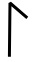
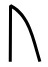
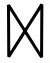
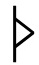

First year students are allowed to specialize, to some degree, since many of you come from venerable heritege based on ideals that lend themselves to certain proclivities. We believe you will find seeking further knowledge at this point in your studies will bear fruit you will carry with you for the rest of your life, even if these studies lead you into areas of magic you are not familiar with -- or perhaps find uncomfortable.
As you know, various tools at our disposal for casting bear both primary and secondary effects upon the target and the caster. Sometimes the target is the caster. All of this must be considered if you wish to start out your career with purpose. In the end, we simply mean to say: Choose wisely, Speakers.
You are allowed some basic runes that bring functionality to most spells you may cast. These runes consist of the following:
| Focus | Type | Form | Strength | |||
|---|---|---|---|---|---|---|
| Defend | None | Lance |  | Minor | ||
|  | Attack |  | Shell | |||
|  | Effect |
While many of you may be familiar with the syntax of the typical Litany, we must take some time here for the uninitiated.
Focus runes begin the Litany and proclaim the purpose of the spell. Unfortunately, anyone familiar with the ancient tongue of speakers like yourselves will know what you are doing before you complete the cast, but sometimes you may use this to your advantage. We will cover this in due time.
Type runes, of course, dictate the nature of the spell, and include secondary effects based on that type. Water is known to drain the stamina of live targets, while targets of fire continue to take damage over time. You will choose which single type you will begine with, and we recommend ones that specialize in defense.
Form runes will be the ones you you for your spells to take shape. Depending on this shape, your spells may effect multiple targets at once, or parhaps harden around you as a shell to ward off attacks.
Finally, Strength runes will not only increase the effectiveness of your spell, but also it's potency, which increases secondary effects.
The simplest Litanies require that only a Focus and Type rune be used, creating a mere small burst of the chosen Type of magic. Such spells may be useful for household chores or scaring rats, I suppose. As you speak more complicated Litanies, you will find yourself capable of wreaking havoc on your targets wherever they may position themselves.